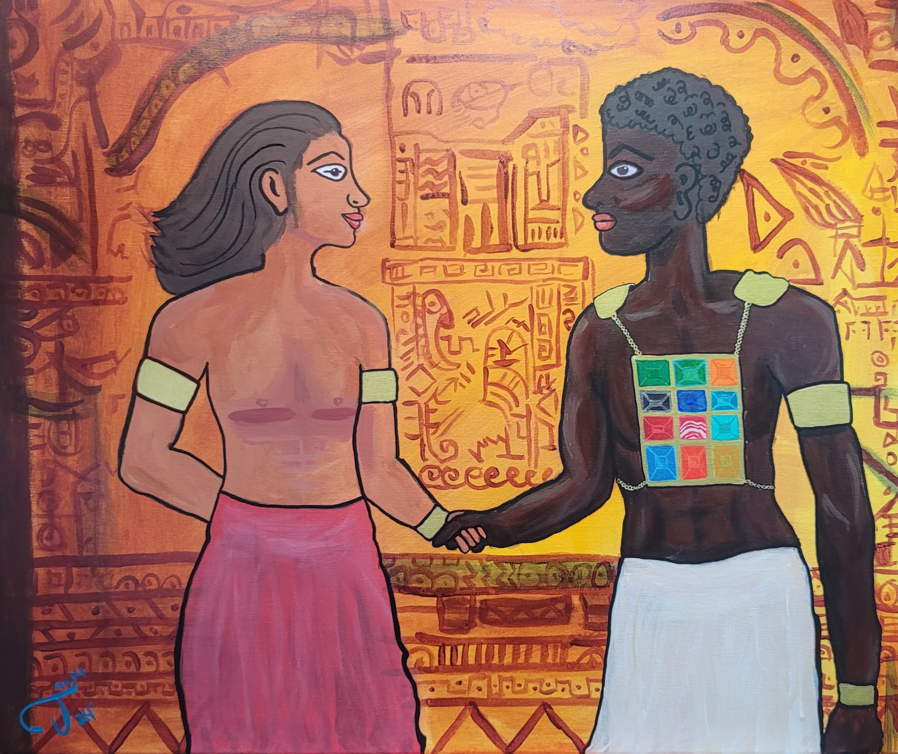
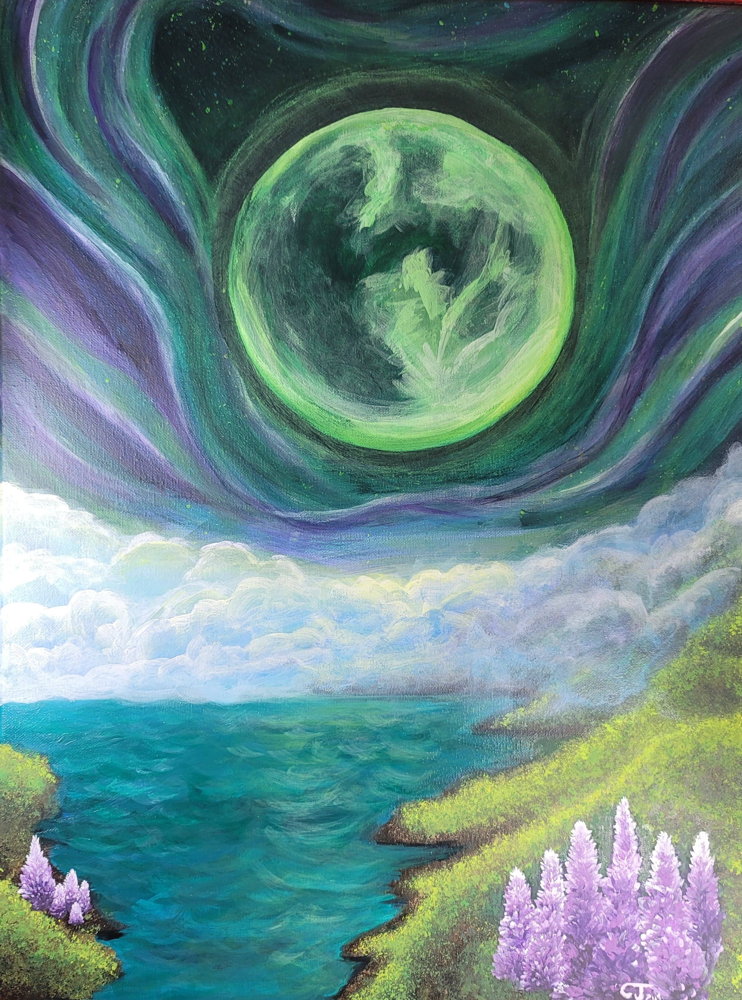
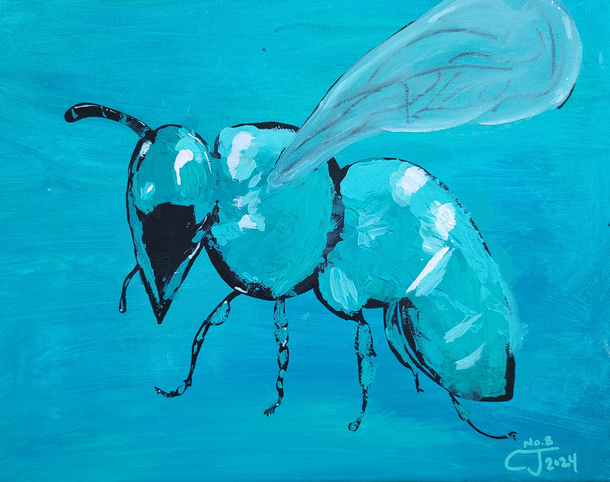

The Lion Trinity is a three panel acrylic piece. Each canvas is separate and utilizes a different way to mix colors in painting. The farthest left canvas is wet on wet. Wet on wet is a painting technique where your colors are mixed on the palate or canvas while they are still wet. For the middle canvas I used the pointillism technique. Pointillism is a color mixing technique where individual points/dots of color are painted so closely together that your eyes mix the colors together in your mind. For example, if you put yellow and blue dots very close together (but not touching) your eyes will mix the colors and you will see green. If you would like to read an article on pointillism or just see some of the most popular pointillism pieces in history, I recommend: Pointillism & It's Legacy: 9 Artworks You Should Know by Elizabeth Berry. The furthest rightmost canvas panel is a color mixing technique called glazing. Glazing involves mixing colors by adding very thin and transparent layers of different colors on top of eachother until you get your desired color. Each layer when glazing must be dry in order to not get the wet on wet mixing to occur.
Yeshua & I

No. 14 Yeshua & I Acrylic on Canvas
Yeshua & I is painted in the style of Aztec hieroglyphics. I am Aztec Native Mexican American and white. I am very proud of my heritage. I am also Two Spirit. I wanted to make a painting showing a representation of Yeshua coming to me where I am originally from and accepting me as Two Spirit. I have the 12 priestly stones (representing the 12 tribes of Judah) on an Ephod (breastplate). Yeshua is our High Priest atoning for our sins so we can be in YHWH's presence without dying (since his glory is more powerful than the sun). I have used a 3rd century painting of Yeshua. found in a Roman catacomb. You will notice his skin tone is brown. He does not have long hair or a beard. I'm also basing His representation on a couple of scriptural references. His hair is like wool. And His arms and legs are burnished bronze.
Jade Moon

No. 12 - Jade Moon Acrylic on Canvas
Jade Moon is a commissioned piece for my neighbor. She named her daughter Jade Moon and wanted a piece reminding her of her daughter. Acrylic on canvas 18 x 24. This is my 11th painting. I had a lot of fun painting a fantasy surrealism piece. The freedom to create something new yet realistic was very pleasing.
Triad Bee
No. 10 Triad Bee Acrylic on Canvas
This is my tenth painting. This is painted using a triadic color palette. Acrylic on canvas 11 x 14.
Monochrome Bee

No. 8 Monochrome Bee Acrylic on Canvas
This is my eigth painting. This is my first pallette knife painting. The background is acrylic wet on wet and the bee is painted with a palate knife
Yeshua in a Willow Field
No. 5 Yeshua in a Willow Field Acrylic on Canvas
This is my fifth painting. This is a painting representing Yeshua in a field of willow trees. It is meant to be surreal as willow trees dont grow in forrest like groups, It is meant to represent serinity.
Tree of Life
No. 3 Tree of Life Acrylic on Canvas
This is my third painting. I painted it in 2021. This is painted on an 11 x 14 canvas with acrylics. The water drop in the background represents life and the tree in the front is accented in gold.
Orca Splash
No. 1 Orca Splash Acrylic on Canvas
This is my first painting. I painted it in 2019. This is painted on an 11 x 14 canvas with acrylics. I was so suprized at how good this came out I wouldn't paint my 2nd painting until two years later. I was afraid it was a fluke and I would never be able to paint something this good ever again.
Asian Lives Matter
No. 15 Asian Lives Matter - Justice for: Yia Xiong
Tragically, Yia Xiong, US War Vet, age 65, of St. Paul Minnesota was shot to death Feb. 11th 2023 by police with an AR-15. After serving in the US war and losing his hearing from that war, Yia Xiong was shot because he could not hear the police demanding him to stop walking away from them. In the body cam footage it is very clear that he cannot hear because even with their loud yelling he did not flinch or show any signs of being able to hear them. Yia Xiong saw that his neighbor was celebrating their daughter's birthday. As in Hmong culture Yia Xiong gave the little girl some money. The father of the child got upset and pulled out a gun. Neighbors called 911 because they were afraid of the man with the gun moving about the apartment lobby. Yia Xiong, a war vet went to his apartment and got a knife to try and scare the person with the gun away. When the police arrived the person with the gun had already left and Yia Xiong was walking back into his apartment. That is when the police started yelling at him. Because he could not hear them (because he lost his hearing fighting for our country) he walked into his apartment not knowing anyone was behind him. But there were at least 2 police officers behind him. One with his taser pulled and the other with an AR-15 pointed at Yia Xiong (you can see the red dot from his laser on Yia Xiong's back). Once Yia went into his home and shut the door the officer with the AR-15 told the officer with the taser pulled to not let him close the door. The officer with the taser pushed in Yia's apartment door and then backed up. Yia Xiong startled at why his door just flung open, turned around and took 1 step forward with his right foot. Immediately you hear 5 shots. Yia died immediately. I painted this painting to help raise awareness. It is a year later and the police were not prosecuted.
Click here to watch the body cam footage that was released from St. Paul police. BEWARE: 18+ and very graphic..
Abstract Self Portrait
No. 13 Close up of eye - Aleppo Codex Psalm 121 in Ancient HebrewNo. 13 Abstract Self-Portrait - Mixed Media on Canvas
Acrylic on stretched canvas 40 x 30. This is an abstract self portrait of myself. I was tasked to make an abstract self-portrait with two items collaged onto it. I chose to attach my dreadlocks. I find a lot of identity in my locks. Samson of the Bible and Torah had 7 dreadlocks. Being part Native I wanted to add feathers to my locks to represent that part of my culture. I am also very interested in studying the ancient manuscripts of the holy scriptures. So inside my eye I pasted a facsimile copy of the Aleppo Codex manuscript of Psalms 121. The holy scriptures state, the eye is a lamp unto your body. Shakespere borrowed this to coin the phrase, "the eyes are the window to your soul." I wanted my eye to be the window into my soul and when you look into the window you see scripture that states: I lift my eyes up unto the mountains where does my help come from? My help comes from You, Maker of Heaven, Creator of the Earth. I also put my other eye in the corner looking up to our Creator.
Analogous Bee
No. 11 Analogous Bee Acrylic on Canvas
This is my eleventh painting. The background was painted with pour painting technique. The bee is painted wet on wet technique with brushes.
Contrasting Bee With Flower
No. 9 Contrasting Bee With Flower Acrylic on Canvas
This is my nineth painting. The flower is painted with contrasting colors to the bee. The flower is alsopainted with a pallete knife. The bee is painted wet on wet with brushes.
Purple Moon
No. 6 Purple Moon Acrylic on Canvas
This is my sixth painting. My friend asked me to paint her a tranquil moon over water.
Love + Equity
No. 4 Love + Equity Acrylic on Canvas
This is my fourth painting. It represents the LGBTQAI+ Community, the transgender community, People of Color, & femanism. Notice the femanism symbol is doubling as a plus sign inbetween love and equity.
Colorful Bison
No. 2 Colorful Bison Acrylic on Canvas
This is my second painting. I painted it in 2021 at the request of my Indigenous friend. This is an 11 x 14 acrylic on canvas.